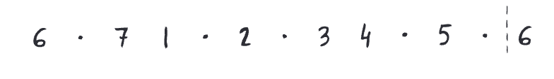

6th harmonic env
jazz

key of A (note 6 = F#)
key of Ab (note 6 = F)
key of B (note 6 = G#)
key of Bb (note 6 = G)
key of C (note 6 = A)
key of D (note 6 = B)
key of Db (note 6 = Bb)
key of E (note 6 = C#)
key of Eb (note 6 = C)
key of F (note 6 = D)
key of G (note 6 = E)
key of Gb (note 6 = Eb)